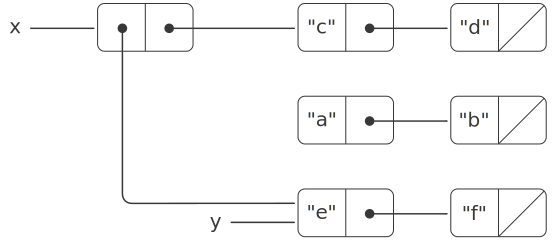
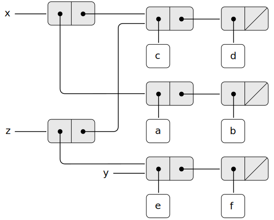
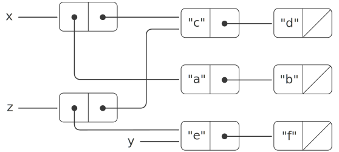
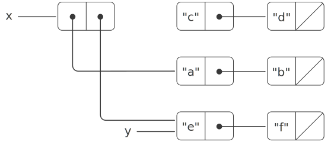
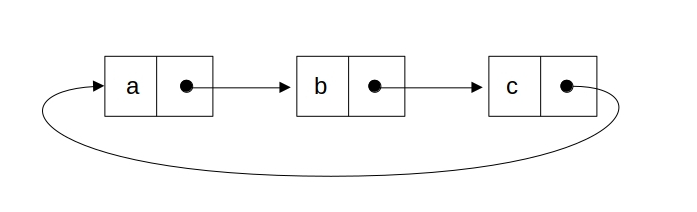
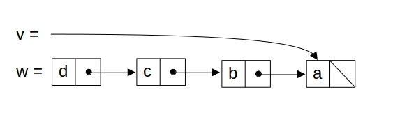
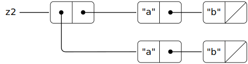

The basic operations on
pairs—cons,
pairs—pair,
car,head,
and
cdr—cantail—can
be used to construct list structure and to select parts
from list structure, but they are incapable of modifying list
structure. The same is true of the list operations we have used so
far, such as append and
list, since these can be defined in terms of
cons,pair,car,head,
and
cdr.tail.
To modify list structures we need new operations.
The primitive mutators for pairs are
set-car!set_head
and
set-cdr!.set_tail.Set-car!The function set_head
takes two arguments, the first of which must be a pair. It modifies this
pair, replacing the
carhead
pointer by a pointer to the second argument of
set-car!set_head.[1]
As an example, suppose that x is bound to
the list
((a b) c d)list(list("a", "b"), "c", "d")
and y to
the list
(e f)list("e", "f")
as illustrated in
figure 3.23.
figure 3.24.
Evaluating the expression
(set-car! x y)set_head(x, y)
modifies the pair to which x is bound,
replacing its
carhead
by the value of y. The result of the operation
is shown in
figure 3.25.
figure 3.26.
The structure x has been modified and
would now be printed as
((e f) c d).
is now equivalent to
list(list("e", "f"), "c", "d").
The pairs representing the list
(a b),list("a", "b"),
identified by the pointer that was replaced, are now detached from the
original structure.[2]
Figure 3.25
Effect of (set-car! x y) on the lists
in figure 3.23.

Figure 3.26
Effect of set_head(x, y) on
the lists in figure 3.24.
Original
JavaScript

Figure 3.27
Effect of (define z (cons y (cdr x)))
on the lists in figure 3.23.

Figure 3.28
Effect of
const z = pair(y, tail(x));
on the lists in figure 3.24.
Original
JavaScript
Figure 3.29
Effect of (set-cdr! x y) on the lists
in figure 3.23.

Figure 3.30
Effect of set_tail(x, y) on the
lists in figure 3.24.
Compare
figure 3.25
figure 3.26
with
figure 3.27,
figure 3.28,
which illustrates the result of executing
Original
JavaScript
(define z (cons y (cdr x)))
const z = pair(y, tail(x));
with x and y
bound to the original lists of
figure 3.23.
figure 3.24.
The
variable
name
z is now bound to a
new pair created by the
conspair
operation; the list to which x is bound is
unchanged.
The
set-cdr!set_tail
operation is similar to
set-car!.set_head.
The only difference is that the
cdrtail
pointer of the pair, rather than the
carhead
pointer, is replaced. The effect of executing
(set-cdr! x y)set_tail(x, y)
on the lists of
figure 3.23
figure 3.24
is shown in
figure 3.29.
figure 3.30.
Here the
cdrtail
pointer of
x has been replaced by the pointer to
(e f).list("e", "f").
Also, the list
(c d),list("c", "d"),
which used to be the
cdrtail
of x, is now detached from the structure.
ConsThe function pair
builds new list structure by creating new pairs,
while set-car!whereas set_head
and
set-cdr!set_tail
modify existing pairs.
Indeed, we could
implement
conspair
in terms of the two mutators, together with a
procedurefunctionget-new-pair,get_new_pair,
which returns a new pair that is not part of any existing list structure.
We obtain the new pair, set its
carhead
and
cdrtail
pointers to the designated objects, and return the new pair as the result of
the
conspair.[3]
Original
JavaScript
(define (cons x y)
(let ((new (get-new-pair)))
(set-car! new x)
(set-cdr! new y)
new))
Exercise 3.12
The following
procedurefunction
for appending lists was introduced in
section 2.2.1:
Original
JavaScript
(define (append x y)
(if (null? x)
y
(cons (car x) (append (cdr x) y))))
function append(x, y) {
return is_null(x)
? y
: pair(head(x), append(tail(x), y));
}
AppendThe function append
forms a new list by successively
consing
the elements of x onto
y.
adjoining the elements of x
to the front of
y.
The
procedurefunctionappend!append_mutator
is similar to append, but it is a mutator
rather than a constructor. It appends the lists by splicing them together,
modifying the final pair of x so that its
cdrtail
is now y. (It is an error to call
append!append_mutator
with an empty x.)
Original
JavaScript
(define (append! x y)
(set-cdr! (last-pair x) y)
x)
function append_mutator(x, y) {
set_tail(last_pair(x), y);
return x;
}
Here
last-pairlast_pair
is a
procedurefunction
that returns the last pair in its argument:
function last_pair(x) {
return is_null(tail(x))
? x
: last_pair(tail(x));
}
Consider the interaction
Original
JavaScript
(define x (list 'a 'b))
const x = list("a", "b");
Original
JavaScript
(define y (list 'c 'd))
const y = list("c", "d");
Original
JavaScript
(define z (append x y))
const z = append(x, y);
Original
JavaScript
z
(a b c d)
z;
["a", ["b", ["c", ["d, null]]]]
Original
JavaScript
(cdr x)
tail(x);
$response$
Original
JavaScript
(define w (append! x y))
const w = append_mutator(x, y);
Original
JavaScript
w
(a b c d)
w;
["a", ["b", ["c", ["d", null]]]]
Original
JavaScript
(cdr x)
tail(x);
$response$
What are the missing $response$s?
Draw box-and-pointer diagrams to explain your answer.
There is currently no solution available for this exercise. This textbook adaptation is a community effort. Do consider contributing by providing a solution for this exercise, using a Pull Request in Github.
Exercise 3.13
Consider the following
make-cyclemake_cycleprocedure,function,
which uses the
last-pairlast_pairprocedurefunction
defined in exercise 3.12:
function make_cycle(x) {
set_tail(last_pair(x), x);
return x;
}
Draw a box-and-pointer diagram that shows the structure
z created by
Original
JavaScript
(define z (make-cycle (list 'a 'b 'c)))
const z = make_cycle(list("a", "b", "c"));
What happens if we try to compute
(last-pair z)?last_pair(z)?
(provided by GitHub user jonathantorres)
If we try to compute last_pair(z), the
program will enter in a infinite loop, since the end of the list points back
to the beginning.

Exercise 3.14
The following
procedurefunction
is quite useful, although obscure:
Original
JavaScript
(define (mystery x)
(define (loop x y)
(if (null? x)
y
(let ((temp (cdr x)))
(set-cdr! x y)
(loop temp x))))
(loop x '()))
function mystery(x) {
function loop(x, y) {
if (is_null(x)) {
return y;
} else {
const temp = tail(x);
set_tail(x, y);
return loop(temp, x);
}
}
return loop(x, null);
}
LoopThe function loop
uses the temporary
variable
name
temp
to hold the old value of the
cdrtail
of x, since the
set-cdr!set_tail
on the next line destroys the
cdr.tail.
Explain what mystery does in general. Suppose
v is defined by
Original
JavaScript
(define v (list 'a 'b 'c 'd))
const v = list("a", "b", "c", "d");
Draw the box-and-pointer diagram that represents the list to which
v is bound. Suppose that we now evaluate
Original
JavaScript
(define w (mystery v))
const w = mystery(v);
Draw box-and-pointer diagrams that show the structures
v and w after
evaluating this
expression.program.
What would be printed as the values of v
and w?
(provided by GitHub user jonathantorres)
The application mystery(x) will
reverse the list x in-place.
Initially
v looks like this:

After evaluating
const w = mystery(v);
the values of
v and
w become:
The function display
prints ["a", null] for
v and
["d", ["c", ["b", ["a", null]]]] for
w.
Sharing and identity
We mentioned in section 3.1.3 the
theoretical issues of
sameness and change
raised by the introduction of assignment. These issues arise in practice
when individual pairs are shared among different data objects.
For example, consider the structure formed by
Original
JavaScript
(define x (list 'a 'b))
(define z1 (cons x x))
const x = list("a", "b");
const z1 = pair(x, x);
As shown in
figure 3.31,
figure 3.32,
z1 is a pair whose
carhead
and
cdrtail
both point to the same pair x. This sharing
of x by the
carhead
and
cdrtail
of z1 is a consequence of the straightforward
way in which
conspair
is implemented. In general, using
conspair
to construct lists will result in an interlinked structure of pairs in
which many individual pairs are shared by many different structures.
Figure 3.33
The list z2 formed by
(cons (list 'a 'b) (list 'a 'b)).

Figure 3.34
The list z2 formed by
pair(list("a", "b"), list("a", "b")).
In contrast to
figure 3.31,
figure 3.33
figure 3.32,
figure 3.34
shows
the structure created by
Original
JavaScript
(define z2 (cons (list 'a 'b) (list 'a 'b)))
const z2 = pair(list("a", "b"), list("a", "b"));
In this structure, the pairs in the two
(a b)list("a", "b")
lists are distinct, although
the actual symbols are shared.
[4]
they contain the same strings.[5]
When thought of as a list, z1 and
z2 both represent the same list:
Original
JavaScript
((a b) a b)
list(list("a", "b"), "a", "b")
In general, sharing is completely undetectable if we operate on lists using
only
cons,pair,car,head,
and
cdr.tail.
However, if we allow mutators on list structure, sharing becomes
significant. As an example of the difference that sharing can make,
consider the following
procedure,function,
which modifies the
carhead
of the structure to which it is applied:
function set_to_wow(x) {
set_head(head(x), "wow");
return x;
}
Even though z1 and
z2 are the same structure,
applying
set-to-wow!set_to_wow
to them yields different results. With z1,
altering the
carhead
also changes the
cdr,tail,
because in z1 the
carhead
and the
cdrtail
are the same pair. With z2, the
carhead
and
cdrtail
are distinct, so
set-to-wow!set_to_wow
modifies only the
car:head:
One way to detect sharing in list structures is to use the predicate
eq?, which we introduced in
section 2.3.1 as a way to test whether two
symbols are equal. More generally, (eq? x y)
tests whether x and
y are the same object (that is, whether
x and y
are equal as pointers).
One way to detect sharing in list structures is to use the
primitive predicate ===,
which we introduced in
section 1.1.6 to test whether two numbers
are equal
and extended in section 2.3.1 to test whether
two strings are equal. When applied to two nonprimitive values,
x === y
tests whether x and
y are the same object (that is, whether
x and y
are equal as pointers).
Thus, with z1 and
z2 as defined in
figure 3.31
and 3.33,
figure 3.32
and 3.34,
(eq? (car z1) (cdr z1))head(z1) === tail(z1)
is true and
(eq? (car z2) (cdr z2))head(z2) === tail(z2)
is false.
As will be seen in the following sections, we can exploit sharing to
greatly extend the repertoire of data structures that can be
represented by pairs. On the other hand, sharing can also be
dangerous, since modifications made to structures will also affect
other structures that happen to share the modified parts. The mutation
operations
set-car!set_head
and
set-cdr!set_tail
should be used with care; unless we have a good understanding of how our
data objects are shared, mutation can have unanticipated
results.[6]
Exercise 3.15
Draw box-and-pointer diagrams to explain the effect of
set-to-wow!set_to_wow
on the structures z1 and
z2 above.
There is currently no solution available for this exercise. This textbook adaptation is a community effort. Do consider contributing by providing a solution for this exercise, using a Pull Request in Github.
Exercise 3.16
Ben Bitdiddle decides to write a
procedurefunction
to count the number of pairs in any list structure.
It's easy, he reasons. The number of pairs in
any structure is the number in the
carhead
plus the number in the
cdrtail
plus one more to count the current pair. So Ben writes the following
procedure:function
Show that this
procedurefunction
is not correct. In particular, draw box-and-pointer diagrams representing
list structures made up of exactly three pairs for which Ben's
procedurefunction
would return 3; return 4; return 7; never return at all.
Exercise 3.17
Devise a correct version of the
count-pairscount_pairsprocedurefunction
of exercise 3.16 that returns the number of
distinct pairs in any structure. (Hint: Traverse the structure, maintaining
an auxiliary data structure that is used to keep track of which pairs have
already been counted.)
// solution provided by GitHub user clean99
function count_pairs(x) {
let counted_pairs = null;
function is_counted_pair(current_counted_pairs, x) {
return is_null(current_counted_pairs)
? false
: head(current_counted_pairs) === x
? true
: is_counted_pair(tail(current_counted_pairs), x);
}
function count(x) {
if(! is_pair(x) || is_counted_pair(counted_pairs, x)) {
return 0;
} else {
counted_pairs = pair(x, counted_pairs);
return count(head(x)) +
count(tail(x)) +
1;
}
}
return count(x);
}
Exercise 3.18
Write a
procedurefunction
that examines a list and
determines whether it contains a cycle, that is,
whether a program that tried to find the end of the list by taking
successive
cdrstails
would go into an infinite loop. Exercise 3.13
constructed such lists.
// solution provided by GitHub user clean99
function contains_cycle(x) {
let counted_pairs = null;
function is_counted_pair(counted_pairs, x) {
return is_null(counted_pairs)
? false
: head(counted_pairs) === x
? true
: is_counted_pair(tail(counted_pairs), x);
}
function detect_cycle(x) {
if (is_null(x)) {
return false;
} else if (is_counted_pair(counted_pairs, x)) {
return true;
} else {
counted_pairs = pair(x, counted_pairs);
return detect_cycle(tail(x));
}
}
return detect_cycle(x);
}
Exercise 3.19
Redo exercise 3.18 using an algorithm that
takes only a constant amount of space. (This requires a very clever idea.)
Define a fast pointer and a slow pointer. The fast pointer goes forward
2 steps every time, while the slow pointer goes forward 1 step every time.
If there is a cycle in the list, the fast pointer will eventually catch
up with the slow pointer.
function contains_cycle(x) {
function detect_cycle(fast, slow) {
return is_null(fast) || is_null(tail(fast))
? false
: fast === slow
? true
: detect_cycle(tail(tail(fast)), tail(slow));
}
return detect_cycle(tail(x), x);
}
Mutation is just assignment
When we introduced compound data, we observed in
section 2.1.3 that pairs can be represented purely
in terms of
procedures:functions:
Original
JavaScript
(define (cons x y)
(define (dispatch m)
(cond ((eq? m 'car) x)
((eq? m 'cdr) y)
(else (error "Undefined operation - - CONS" m))))
dispatch)
(define (car z) (z 'car))
(define (cdr z) (z 'cdr))
function pair(x, y) {
function dispatch(m) {
return m === "head"
? x
: m === "tail"
? y
: error(m, "undefined operation -- pair");
}
return dispatch;
}
function head(z) { return z("head"); }
function tail(z) { return z("tail"); }
The same observation is true for mutable data. We can implement
mutable data objects as
proceduresfunctions
using assignment and local state. For instance, we can extend the above
pair implementation to handle
set-car!set_head
and
set-cdr!set_tail
in a manner analogous to the way we implemented bank accounts using
make-accountmake_account
in section 3.1.1:
Original
JavaScript
(define (cons x y)
(define (set-x! v) (set! x v))
(define (set-y! v) (set! y v))
(define (dispatch m)
(cond ((eq? m 'car) x)
((eq? m 'cdr) y)
((eq? m 'set-car!) set-x!)
((eq? m 'set-cdr!) set-y!)
(else (error "Undefined operation - - CONS" m))))
dispatch)
(define (car z) (z 'car))
(define (cdr z) (z 'cdr))
(define (set-car! z new-value)
((z 'set-car!) new-value)
z)
(define (set-cdr! z new-value)
((z 'set-cdr!) new-value)
z)
function pair(x, y) {
function set_x(v) { x = v; }
function set_y(v) { y = v; }
return m => m === "head"
? x
: m === "tail"
? y
: m === "set_head"
? set_x
: m === "set_tail"
? set_y
: error(m, "undefined operation -- pair");
}
function head(z) { return z("head"); }
function tail(z) { return z("tail"); }
function set_head(z, new_value) {
z("set_head")(new_value);
return z;
}
function set_tail(z, new_value) {
z("set_tail")(new_value);
return z;
}
Assignment is all that is needed, theoretically, to account for the
behavior of mutable data. As soon as we admit
set!assignment
to our language, we raise all the issues, not only of assignment, but of
mutable data in general.[7]
Exercise 3.20
Draw environment diagrams to illustrate the evaluation of the sequence
of
expressions
statements
Original
JavaScript
(define x (cons 1 2))
(define z (cons x x))
(set-car! (cdr z) 17)
(car x)
const x = pair(1, 2);
const z = pair(x, x);
set_head(tail(z), 17);
Original
JavaScript
(car x)
17
head(x);
17
using the
procedural
functional
implementation of pairs given above. (Compare
exercise 3.11.)
There is currently no solution available for this exercise. This textbook adaptation is a community effort. Do consider contributing by providing a solution for this exercise, using a Pull Request in Github.
Set-car! and
set-cdr! return
implementation-dependent
values. Like set!, they should be used
only for their effect.
The functions set_head and
set_tail return the value
undefined.
They should be used only for their effect.
[2]
We see from this that mutation operations on
lists can create garbage that is not part of any accessible
structure. We will see in section 5.3.2 that
LispJavaScript
memory-management systems include a
garbage collector, which identifies and recycles the memory
space used by unneeded pairs.
Get-new-pair
is one of the operations that must be implemented as part of the memory
management required by a Lisp implementation.
We will discuss this in
section 5.3.1.
Section 5.3.1
will show how a memory-management system
can implement get_new_pair.
[4]
The two pairs are distinct because each call to
cons returns a new pair. The
symbols are shared; in Scheme there is a
unique symbol with any given
name. Since Scheme provides no way to mutate a symbol, this sharing is
undetectable. Note also that the sharing is what enables us to
compare symbols using eq?, which simply checks equality of
pointers.
[5]
The two pairs are distinct
because each call to pair
returns a new pair. The strings are
the same in the sense
that they are primitive data (just like numbers) that are composed of
the same characters in the same order. Since JavaScript provides no way
to mutate a string, any sharing that the designers of a JavaScript
interpreter might decide to implement for strings is undetectable.
We consider primitive data such as numbers, booleans, and strings
to be identical if and only if they are
indistinguishable.
[6]
The subtleties of dealing with sharing of mutable data
objects reflect the underlying issues of sameness and
change that were raised in
section 3.1.3. We mentioned there
that admitting change to our language requires that a compound object must
have an identity that is something different from the pieces
from which it is composed. In
Lisp,JavaScript,
we consider this identity to be the quality that is tested by
eq?,===,
i.e., by equality of pointers. Since in most
LispJavaScript
implementations a pointer is essentially a memory address, we are
solving the problem of defining the identity of objects by
stipulating that a data object itself is the information
stored in some particular set of memory locations in the computer. This
suffices for simple
LispJavaScript
programs, but is hardly a general way to resolve the issue of
sameness in computational models.
[7]
On the other hand, from the viewpoint of
implementation, assignment requires us to modify the environment, which is
itself a mutable data structure. Thus, assignment and mutation are
equipotent: Each can be implemented in terms of the other.